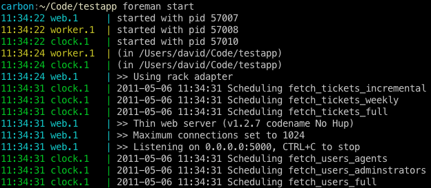

Introducing Foreman
Lately I've noticed my web apps are getting complicated to run. My apps no longer consist of a single web process; I usually have have one or more types of background workers to run different types of jobs and a clock process to handle scheduling. Splitting an app up in this way is great for performance and scalability. The downside, however, is that it becomes much more complicated to get the app and all of its parts running.
Foreman is an attempt to make this easier. Using
foreman you can declare the various processes that are needed to run your application
using a Procfile.
web: bundle exec thin start -p $PORT
worker: bundle exec rake resque:work QUEUE=*
clock: bundle exec rake resque:scheduler
To get started, simply run gem install foreman. If your project is using both Bundler and Foreman,
launching it should be as simple as
$ bundle install
$ foreman start

Foreman will start all of the processes associated with your app and display stdout and stderr of
each process. Processes are color-coded by type to make them easy to read. $PORT will be
automatically assigned by foreman and made available to each underlying process.
Exporting to Production
While foreman is great for running your application in development, there are some
great existing tools for managing processes in production. Foreman can export to either upstart
or standard unix init.
Exporting to upstart
$ foreman export upstart /etc/init
[foreman export] writing: /etc/init/testapp.conf
[foreman export] writing: /etc/init/testapp-web.conf
[foreman export] writing: /etc/init/testapp-web-1.conf
[foreman export] writing: /etc/init/testapp-worker.conf
[foreman export] writing: /etc/init/testapp-worker-1.conf
[foreman export] writing: /etc/init/testapp-clock.conf
[foreman export] writing: /etc/init/testapp-clock-1.conf
After exporting to upstart, the following commands become available:
$ start testapp
$ stop testapp-clock
$ restart testapp-worker-1
Exporting to init
$ foreman export inittab
# ----- foreman testapp processes -----
TE01:4:respawn:/bin/su - testapp -c 'PORT=5000 bundle exec thin start -p $PORT >> /var/log/testapp/web-1.log 2>&1'
TE02:4:respawn:/bin/su - testapp -c 'PORT=5100 bundle exec rake resque:work QUEUE=* >> /var/log/testapp/worker-1.log 2>&1'
TE03:4:respawn:/bin/su - testapp -c 'PORT=5200 bundle exec rake resque:scheduler >> /var/log/testapp/clock-1.log 2>&1'
# ----- end foreman testapp processes -----
Advanced Options
Concurrency
Foreman supports running more than 1 of each process type.
# run 1 of each process type, and 2 workers
$ foreman start -c worker=2
# do not run a clock process
$ foreman start -c clock=0
Port Assignment
Foreman starts port assignments at 5000 by default, and assigns them in blocks of 100 per process type in the
order used in your Procfile
For the Procfile used at the top of this post, web.1 would be assigned port 5000, worker.1 would be 5100,
and clock.1 would be 5200. If you were ran 2 web processes, web.2 would be assigned 5001.
You can specify an alternate starting port for foreman to use with the -p option.
Documentation
For more information about the available options, check out the man page.
Comments